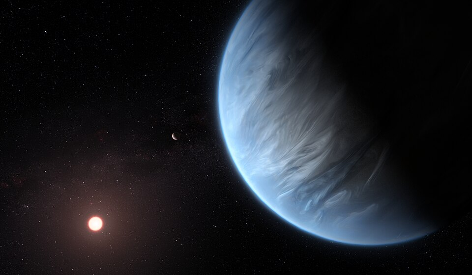

Планеты и условия, благоприятные для жизни

Землеподобные планеты
Для жизни в форме, похожей на земную, нужны жидкая вода, стабильная атмосфера и подходящая температура. Поиск экзопланет в зоне обитаемости — одна из главных задач современных телескопов.
Примеры: планеты вокруг TRAPPIST-1, некоторые кандидаты, обнаруженные телескопом Kepler и миссией TESS.
Другие условия
- Геологическая активность (источники энергии).
- Наличие химических элементов (C, H, O, N, P, S).
- Защита от высокой радиации (магнитное поле или плотная атмосфера).